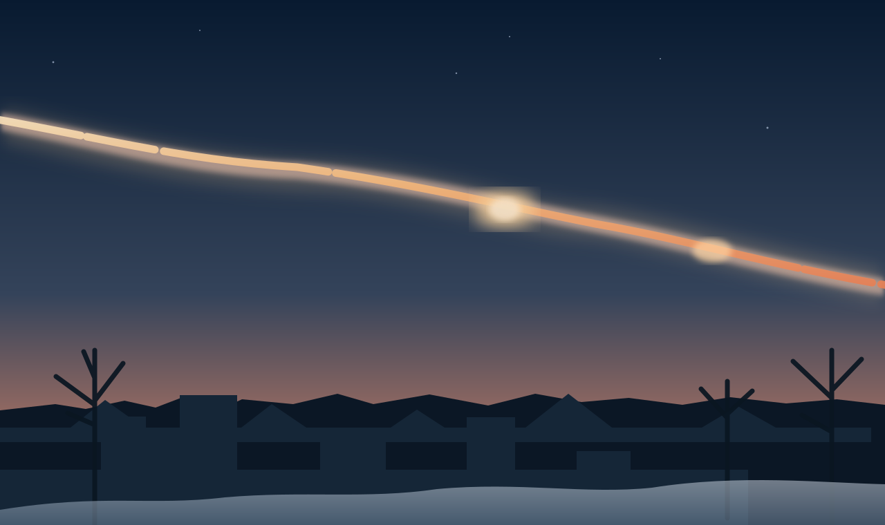
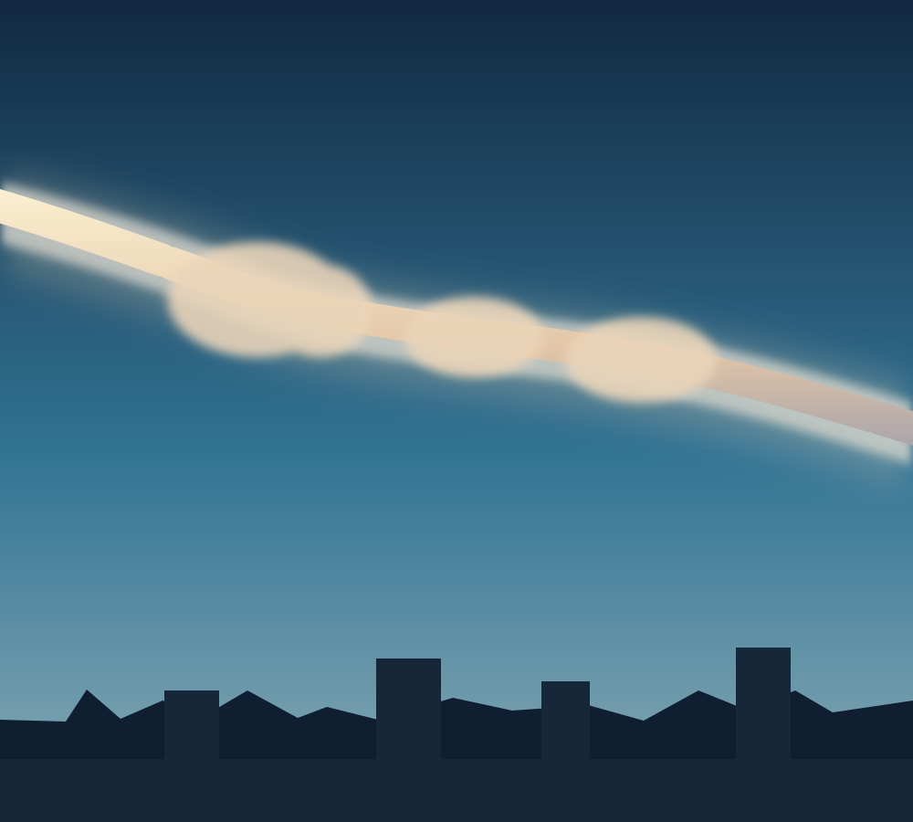

~18 m
Diámetro del objeto
Estimado en unos 17 a 20 metros.
Ingresá la contraseña para ver el contenido de Cheliábinsk.
El día que el cielo explotó.
El 15 de febrero de 2013, una roca espacial cruzó el cielo de Rusia. En segundos, un destello extraordinario se convirtió en uno de los eventos astronómicos más estudiados de nuestra época.

Representación · 15.02.2013Eran alrededor de las 9:20 de la mañana. Sin aviso, una luz intensa apareció sobre los montes Urales y atravesó el cielo de Cheliábinsk, Rusia.
No era un avión ni un cometa: un pequeño asteroide había ingresado en la atmósfera terrestre a una velocidad extraordinaria. El objeto se fragmentó y liberó gran parte de su energía en el aire, antes de tocar el suelo.
La bola de fuego sorprendió a miles de personas y quedó registrada en cámaras de autos.
La explosión principal ocurrió en la atmósfera. Solo cayeron fragmentos de la roca.

Ilustración conceptual de la estela de polvo que permaneció después de la explosión.
A pesar de medir apenas unas decenas de metros, la roca espacial desató una explosión de enorme potencia.
✦Las cifras son aproximaciones científicas. Distintos estudios publicaron valores ligeramente diferentes según el método de medición.
Una roca procedente del espacio se desplaza sobre la región de Cheliábinsk y se convierte en una enorme bola de fuego.
El meteoroide se fragmenta a gran altitud y produce un destello extremadamente brillante.
La onda de choque alcanza la ciudad. Numerosos vidrios se rompen y muchas personas sufren lesiones.
Se recupera del lago Chebarkul un gran fragmento del meteorito, de más de 570 kilogramos.
El verdadero peligro no fueron las piedras que cayeron: fue la onda de choque generada por la explosión atmosférica.
Gran parte de las lesiones se relacionaron con vidrios rotos al llegar la onda expansiva a edificios y viviendas.
La onda de presión hizo estallar cristales y ocasionó daños en miles de edificios.
Varias piezas llegaron al suelo, incluida una muy grande hallada en el lago Chebarkul.
!¿Por qué se rompieron ventanas? Porque la luz llegó primero y el sonido y la onda de choque llegaron después. Por eso es peligroso acercarse a los vidrios tras ver un destello intenso.
Son palabras parecidas, pero no significan exactamente lo mismo.
El objeto que llegó a Cheliábinsk era un pequeño asteroide o meteoroide antes de ingresar a la atmósfera. La luz que vimos fue un meteoro, y sus fragmentos en el suelo son meteoritos.
¿Qué nos enseñó? Que incluso los objetos espaciales relativamente pequeños pueden causar daños, y que estudiar estos sucesos ayuda a mejorar la defensa planetaria.
Fragmento de roca o metal que viaja por el espacio.
Fenómeno luminoso producido al atravesar la atmósfera: la “estrella fugaz”.
Fragmento que sobrevive al paso por la atmósfera y alcanza el suelo.
Diez preguntas para repasar lo aprendido. Avanzá en bloques de tres.
Elegí una respuesta.
Elegí una respuesta.
Elegí una respuesta.
Elegí una respuesta.
Elegí una respuesta.
Elegí una respuesta.
Elegí una respuesta.
Elegí una respuesta.
Elegí una respuesta.
Elegí una respuesta.
Esta presentación se elaboró con información de organismos científicos y espaciales. Podés abrir cada enlace para conocer más.
Dimensiones, entrada atmosférica y fragmentación.
Velocidad, altitud y dispersión del polvo.
Información y análisis de la Agencia Espacial Europea.
Lesiones por la onda expansiva y medidas de protección.
Equipo de la exposición escolar sobre el meteorito de Cheliábinsk.
Curso: 3° Primera · Materia: Físico-química